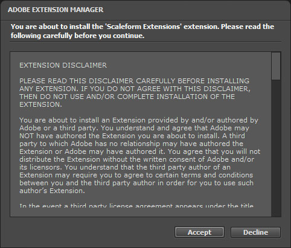
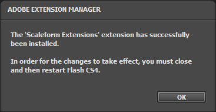
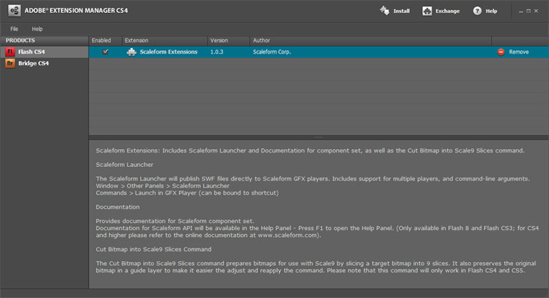
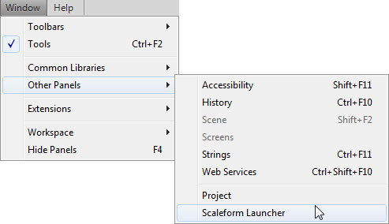
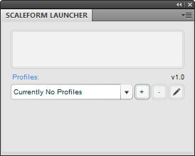
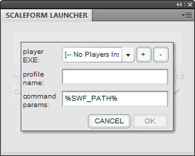
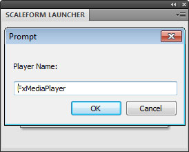

UDN
Search public documentation:
SettingUpScaleformGFx
日本語訳
中国翻译
한국어
Interested in the Unreal Engine?
Visit the Unreal Technology site.
Looking for jobs and company info?
Check out the Epic games site.
Questions about support via UDN?
Contact the UDN Staff
中国翻译
한국어
Interested in the Unreal Engine?
Visit the Unreal Technology site.
Looking for jobs and company info?
Check out the Epic games site.
Questions about support via UDN?
Contact the UDN Staff
Setting Up Scaleform GFx
Scaleform GFx Launcher
Installing Scaleform GFx Launcher
Installing the Scaleform GFx launcher for Unreal Engine 3 development follows the standard process:- In Adobe Flash Professional, go to Help > Manage Extensions to run the Adobe Extension Manager.
- At the top-right of the Launcher, click the Install button.
- In the file browser that opens, navigate to
[UE3Directory]\Binaries\GFx\CLIK Tools. and choose theScaleform CLIK.mxpfile.
- You will need to agree to the license on the dialog that opens.
 - A dialog will then appear showing the installation was successful.
 - The Scaleform GFx Launcher is now displayed in the Adobe Extension Manager dialog.
 - Restart Adobe Flash Professional CS4, close Extension Manager.
- Navigate to Window > Other Panels, choose Scaleform Launcher.
 - The Scaleform Launcher panel is now displayed.

Setting up Scaleform GFx Launcher
The Scaleform Launcher needs to be set up to point to the GFx player, so CLIK widgets and their functionality is accessible to preview within Adobe Flash Professional.- Click the button to add a new Profile.
 - The GFx player needs to be referenced. Click the button to add a player.
- Navigate to
[UE3Directory]\Binaries\GFx. - Select
FxMediaPlayer.exe. NOTE: if you're warned the scripts are running slowly, choose NO. This is a known issue, and Scaleform is fixing it in a future release. - Name the player FxMediaPlayer.
 - You can name the profile using the Profile Name field.
FxMediaPlayerNoDebug.exe player if you wish. This player will not report loading of instances in the console, and will instead only spit out trace commands within your ActionScript.
Setting Up Additional Profiles For Split Screen Previewing
To accurately test the UI's positioning and scaling for standard definition, and split screen screen resolutions, you can set up multiple profiles based on the previous steps to have the GFx Player preview window start at a specific resolution.- Once you have a player set up, in the Scaleform Launcher panel click the button.
- Name the profile SD.
- In the command params text field, after
%SWF PATH%add the text-res 960:720. - Click OK to save.
- NOTE After you hit Launch, the movie will be scaled to fit the view port. Press Ctrl + D on the keyboard to make it fill the player.
Installing CLIK library
ActionScript 2 / Scaleform 3
- Within Adobe Flash Professional CS4, go to Edit > Preferences.
- Choose ActionScript.
- Click the
 button.
button.
- Add a new entry with the button.
- Set path to the CLIK directory (for example:
[UE3Directory]\Development\Flash\AS2\CLIK). -
 Make sure that the path you added is second from the top (see image below)!
Make sure that the path you added is second from the top (see image below)!
ActionScript 3 / Scaleform 4
- Within Adobe Flash Professional CS5.5, go to Edit > Preferences.
- Choose ActionScript.
- Click the button.
- Add a new entry with the button in the Source path section.
- Set path to the CLIK directory (for example:
[UE3Directory]\Development\Flash\AS3\CLIK) - see below.